Submitting your work (GitHub)¶
We are using GitHub to submit the solutions. The repository is created through a link included in the Moodle. The solution of the exercises are created within these repositories, then committed and pushed to GitHub. The submission is finished with a pull request assigned to the instructor (with GitHub username siktdavid).
The submission requirements detailed below and mandatory. Submissions not following these guidelines are not graded.
Short version, aka. TL;DR¶
The detailed description below shows the entire procedure. This summary is an overview of the whole process.
-
The exercises are solved in a dedicated GitHub repository created using a GitHub Classroom invitation link published in Moodle.
-
Your solution is submitted on a new branch, not on master. You can create any number of commits on this branch. You need to push these commits to GitHub.
-
You submit your final solution through a pull request assigned to the instructor.
-
You can ask questions regarding the results and evaluation in the pull request comment thread. To notify your instructor use the @name annotation in the comment text.
Starting your work: git checkout¶
-
Open the course page in Moodle and find the invitation URL.
-
If needed, authorize the GitHub Classroom application to use your account data.
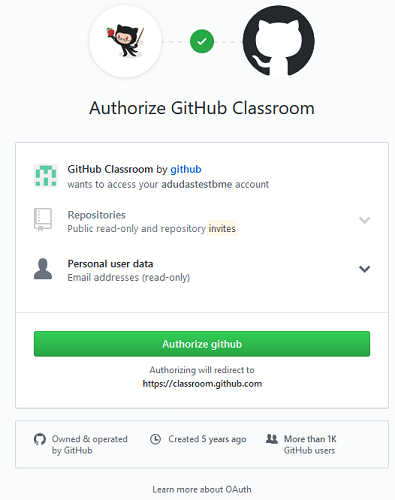
-
You will see a page where you can "Accept the ... assignment". Click the button.
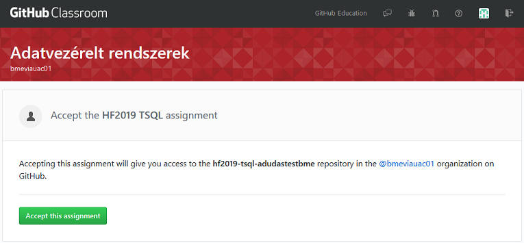
-
Wait for the repository creation to finish. You will get the repository URL here.
The repository will be private. No one but you and the instructor will see it.
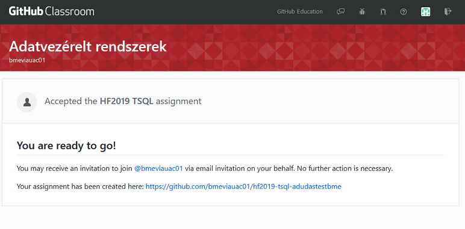
-
Open the repository webpage by following the link. You will need this URL, so remember it.
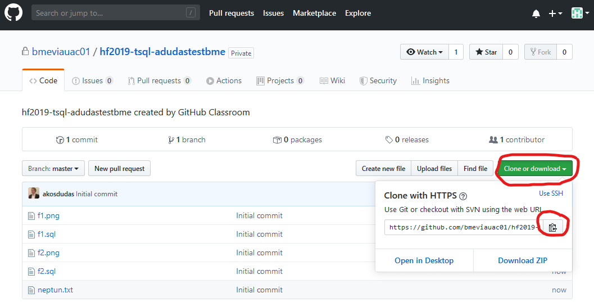
-
Clone the repository. You will need the repository git URL, which you can get from the repository webpage following the Clone or download button.
You may use any git client. The simplest one is GitHub Desktop if you do not have a favorite yet. You can list your repositories in this application directly from GitHub.
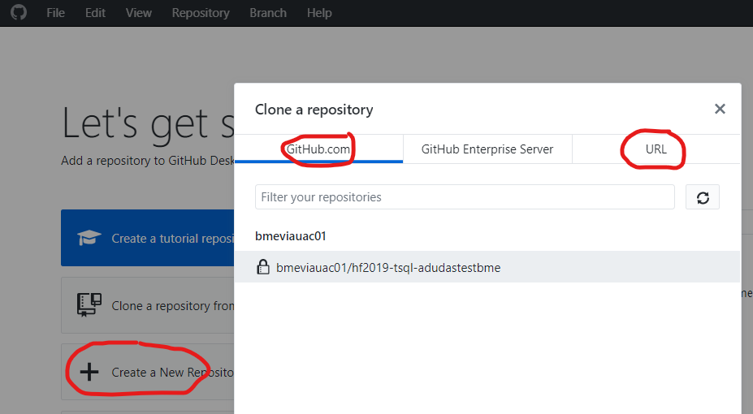
If you are using the shell or the console, the following command performs the clone (if the
gitcommand is available):git clone <repository link>If the login fails with the username/password pair in the case of "Clone with HTTPS", (for a user that has been used for a long time) it is worth checking the expiration date of the Personal Access token on git.
Down arrow next to the profile picture in the upper right corner > Settings > on the left (bottom) Developer settings > Personal Access Tokens.
As an alternative method: instead of HTTP cloning, to use an SSH key, instructions here can be found.
If you are using Sourcetree, you might need to use a Personal Access Token (PAT) for access as follows:
- Head to your GitHub account settings and choose Developer settings from the left menu.
- Choose the Personal access token option and click Generate new token.
- The note field is to remember what this token was created for. Let's give a name, e.g.,
sourcetree. - In the Select scope form, tick every box available and click Generate token.
- After the generation process, copy the created token to the clipboard and head over to the Sourcetree app.
- Go to Tools -> Options -> Authentication.
- If you already have a GitHub account set up with some other access token or authentication info, click on it and choose Edit, otherwise choose Add.
- Choose the hosting service as GitHub, preferred protocol as HTTPS, and at the Credentials part choose Authentication Basic. Type in your GitHub username, then click on the Refresh Password option.
- Copy the created token as the password and click OK.
- After this, cloning and pushing to the repository should work.
-
If the cloning is successful, PLEASE CHECK THE ASSIGNMENT MILESTONE INSTRUCTIONS! The individual part of your solution should not be committed to the repository
masterbranch.Before you make your first commit, check whether your name and email address are properly configured. You can check this using the following commands.
git config user.name git config user.emailIf the values are not correct, set your name and email address with the following commands executed in the repository directory. This will set the values for the repository. (It is recommended to set the email address to the one you use with GitHub.)
git config user.name "John Doe" git config user.email "john@doe.org"To avoid having to set this for all repositories, you may want to set the name and email address globally using the
--globalswitch in the commands above.If you are ready with the project initialization as detailed in the actual milestone instruction, create a new branch with the requested name.
In GitHub Desktop, use the Branch menu for creating a new one.
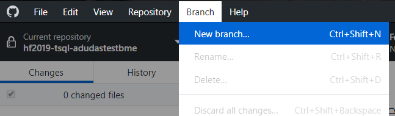
If using the console, use the following command:
git checkout -b branchname -
Complete the exercises on this branch. You may have any number of commits and pushes.
To commit using GitHub Desktop, first check if you are on the right branch. During the first push, the solution branch needs to be published.
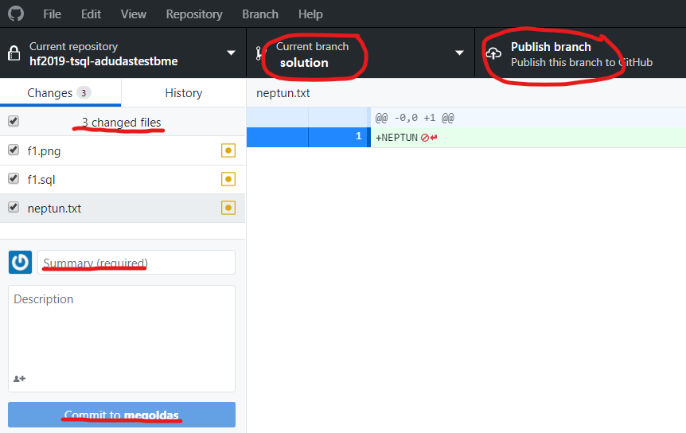
When adding further commits, verify the branch. You can publish the commit using the Push origin button. The tiny number on this button shows you how many commits need pushing.
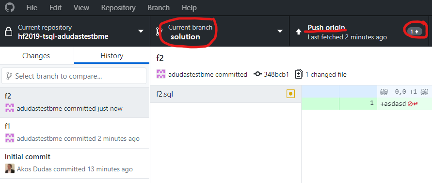
If you are using the console, use the following commands:
# Check the current branch and the files modified git status # Prepares all changes for commit git add . # Commit git commit -m "commit message" # Push the new branch (first time) git push --set-upstream origin solution # Push further commits git push
Submitting the solution¶
-
When you are ready with the exercises, verify on the repository web page that you uploaded everything. You may need to switch branches.
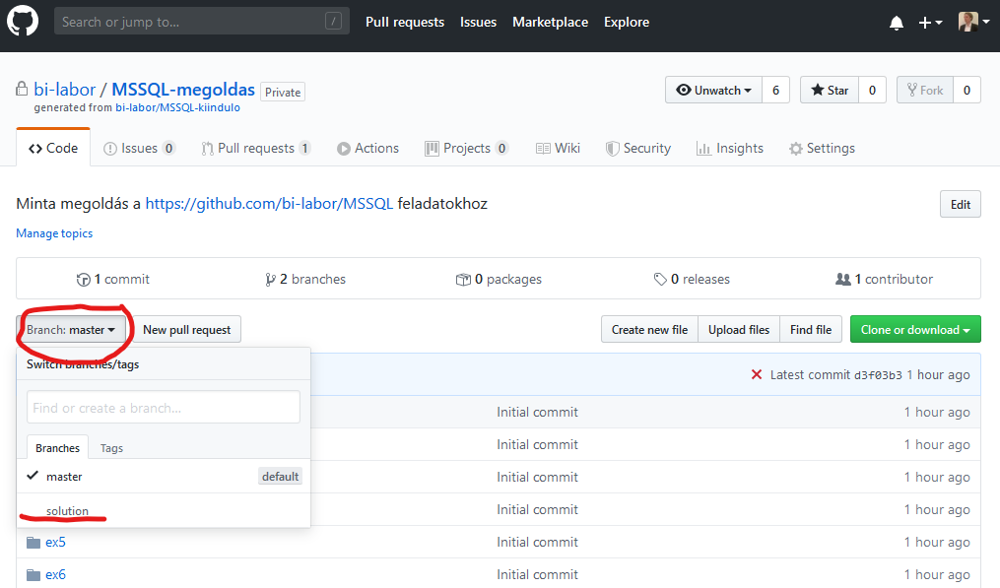
We recommend that you do not use GitHub web file upload. If something is missing, add it to your local repository and commit and push again.
-
When you are truly ready, open a pull request.
This pull request combines all changes you made and shows us the final result. This helps the instructor to evaluate your submission more easily by seeing all changes at once. This pull request means you submit your solution; hence this step cannot be omitted.
To open the pull request, you need to go to the repository's GitHub web frontend. If you pushed recently, GitHub will offer you to create the pull request.
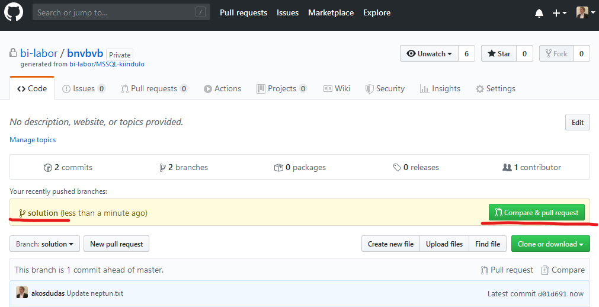
You may also open the pull request from the menu at the top. It is important to specify the correct branches:
masteris the target into whichsolutionis merged.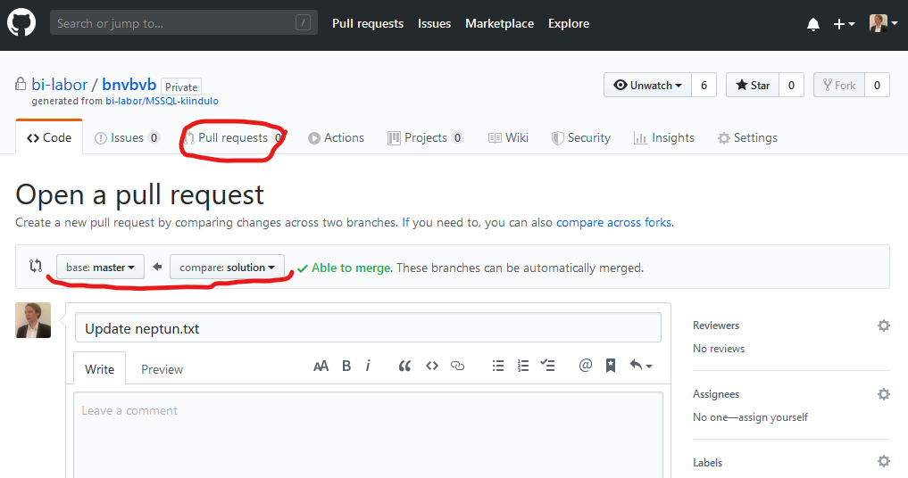
When the pull request is created, you will see a little number "1" on the Pull request menu showing you that there is one open item there. YOU ARE NOT FINISHED YET!
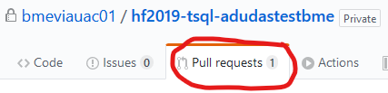
-
The pull request will trigger a preliminary evaluation. You will see the result of this evaluation as a comment added to the pull request thread.
This will be different for each homework. Your code will be executed and tested.
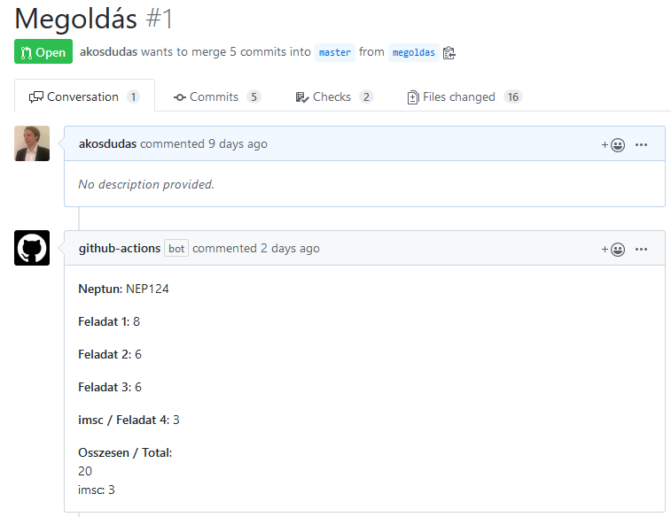
-
If you are not satisfied with your work, you can make further changes. You only need to commit and push your changes. Any changes pushed will re-trigger the evaluation of the pull request. We ask that you trigger NO MORE THAN 5 evaluations!
If you want to make changes to your submission and not have the re-evaluation run, you should convert the pull request to draft.
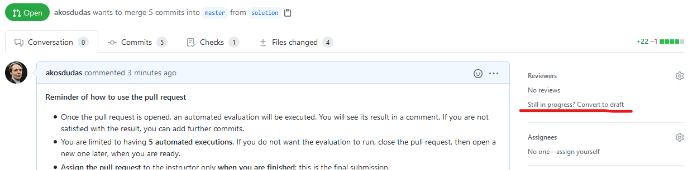
This state means work in progress. You can commit and push freely. These will not trigger any evaluation. Once ready, you must change the state back: go to the bottom of the PR and click "Ready for review." This will set the PR back to its normal state and trigger an automated evaluation.
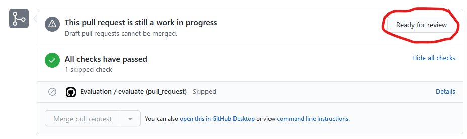
Evaluations that fail due to transient errors, such as network problems, are not counted into the 5 evaluations. But if you trigger more evaluation by mistake, or on purpose, it will be sanctioned. You are required to test your solution locally before submitting it.
-
FINALLY, when you are ready, assign the pull request to the instructor. This step is considered as the submission of your work.
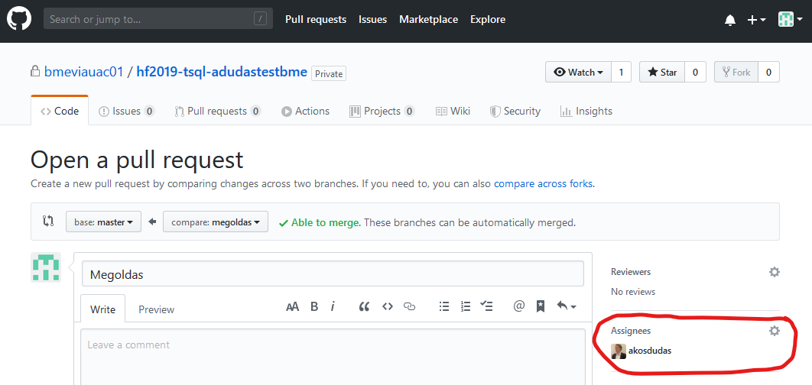
If you have no pull request, or it is not assigned to the instructor, we consider it work in progress and not submitted.
Now you are ready. After assigning the pull request, make no further changes. The instructor will evaluate the submission and close the pull request.
Questions and complaints regarding the final result¶
If you have questions or concerns regarding the automated evaluation, use the pull request for communication with the instructor by asking questions via comments. To let the instructor know you have questions, please use @siktdavid mention in the PR comment. This will automatically send an email notification.
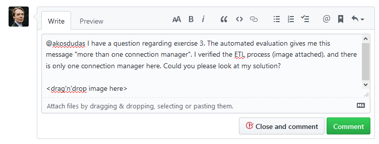
Please note that if you think the evaluation made a mistake, you must support your question/complaint with proof (e.g., show how you tested your solution and prove that it worked).